전산응용토목제도기능사 (2009-09-27 기출문제)
1과목: 토목제도(CAD)
1. 180° 표준갈고리는 구부린 반원 끝에서 철근 공칭지름(db)의 최소 몇 배 이상 연장해야 하는가?
- 4배
- 5배
- 6배
- 7배
(정답률: 68%)

2. 보의 횡지지 간격은 얼마를 초과하지 않도록 하여야 하는가?
- 압축 플랜지 또는 압축면의 최소 폭의 20배
- 압축 플랜지 또는 압축면의 최소 폭의 30배
- 압축 플랜지 또는 압축면의 최소 폭의 40배
- 압축 플랜지 또는 압축면의 최소 폭의 50배
(정답률: 22%)
3. 시방배합과 현장배합에 대한 설명으로 옳지 않은 것은?
- 시방배합에서는 골재의 함수상태는 표면건조포화상태를 기준으로 한다.
- 시방배합을 현장배합으로 고치는 경우 골재의 표면수량은 제외한다.
- 시방배합에서 굵은골재와 잔골재를 구분하는 기준은 5㎜체이다.
- 시방배합을 현장배합으로 고치는 경우 혼화제를 희석시킨 희석수량 등을 고려하여야 한다.
(정답률: 56%)
4. 철근콘크리트 구조물에서 최소 철근간격의 제한 규정이 필요한 이유와 가장거리가 먼 것은?
- 콘크리트 타설을 용이하게 하기 위하여
- 전단 및 수축 균열을 방지하기 위하여
- 철근과 철근사이의 공극을 방지하기 위하여
- 철근의 부식을 방지하기 위하여
(정답률: 43%)
5. 4변에 의해 지지되는 2방향 슬래브 중에서 짧은 변에 대한 긴 변의 비가 최소 몇 배를 넘으면 1방향 슬래브로 해석하는가?
- 2배
- 3배
- 4배
- 5배
(정답률: 56%)
6. 한중 콘크리트에 관한 설명으로 옳지 않은 것은?
- 하루의 평균기온이 4°C 이하가 되는 기상조건 하에서는 한중콘크리트로서 시공한다.
- 타설할 때의 콘크리트 온도는 5°C~20°C의 범위에서 정한다.
- 가열한 재료를 믹서에 투입할 경우 가열한 물과 굵은골재, 잔골재를 넣어서 믹서안의 재료온도가 60°C 정도가 된 후 시멘트를 넣는 것이 좋다.
- AE콘크리트를 사용하는 것을 원칙으로 한다.
(정답률: 56%)
7. 1방향 슬래브의 최소 두께는 얼마 이상인가?
- 50㎜
- 80㎜
- 100㎜
- 150㎜
(정답률: 77%)
8. 시멘트의 응결 시간을 늦추기 위하여 사용되는 혼화제는?
- 급결제
- 지연제
- 발포제
- 감수제
(정답률: 88%)
9. 강도설계법의 단철근 직사각형보에서 압축연단에 발생되는 등가 직사각형 응력의 깊이(a)에 관한 설명으로 옳은 것은?
- 철근의 단면적(AS)에 비례한다.
- 철근의 항복강도(fy)에 반비례한다.
- 콘크리트 설계기준강도(f?ck)에 비례한다.
- 사각형보이 폭(b)에 비례한다.
(정답률: 29%)
10. 블리딩을 적게하는 방법으로 옳지 않은 것은?
- 분말도가 높은 시멘트를 사용한다.
- 단위수량을 크게 한다.
- AE제를 사용한다.
- 포졸란을 사용한다.
(정답률: 69%)
11. 철근의 겹침이음을 해서는 안 되는 철근은?
- D10을 초과하는 철근
- D25를 초과하는 철근
- D28을 초과하는 철근
- D35를 초과하는 철근
(정답률: 78%)
12. 골재의 조립률에 관한 설명으로 옳지 않은 것은?
- 잔골재의 조립률이 콘크리트의 품질특성에 영향을 준다.
- 골재의 입도를 수치적으로 나타낸 것을 조립률이라 한다.
- 조립률을 구할 때 쓰이는 체는 5개이다.
- 조립률이 큰 값일수록 굵은 입자기 많이 포함되어 있다.
(정답률: 62%)
13. 나선철근과 띠철근 기둥에서 축방향 철근의 순간격은 최소 얼마 이상인가?
- 40㎜ 이상
- 50㎜ 이상
- 60㎜ 이상
- 70㎜ 이상
(정답률: 61%)
14. 휨주재에 대하여 강도설계법으로 설계할 경우 잘못된 가정은?
- 철근과 콘크리트 사이의 부착은 완전하다.
- 보가 파괴를 일으키는 콘크리트의 최대 변형률은 0.003 이다.
- 콘크리트 및 철근의 변형률은 중립축으로부터의 거리에 비례한다.
- 보의 극한 상태에서의 휨 모멘트를 계산할 때에는 콘크리트의 인장강도를 고려한다.
(정답률: 61%)
15. D38 이상 철근의 표준 갈고리의 구부림 최소 내면 반지름은? (단, db : 공칭지름[㎜])
- 3db
- 4db
- 5db
- 6db
(정답률: 54%)
16. 도로교 설계기준에서 규정하고 있는 지간(L)이 20m인 교량의 상부구조에 대한 충격 계수는 얼마인가?
- 0.20
- 0.25
- 0.30
- 0.35
(정답률: 53%)
17. 옹벽에서 일반적인 활동에 대한 안전율은 얼마 이상으로 하는가?
- 1.0
- 1.5
- 2.0
- 3.0
(정답률: 47%)
18. 교각위에 탑을 세우고, 탑에서 경사진 케이블로 주형을 잡아당기는 형식의 교량은?
- 사장교
- 현수교
- 게르버교
- 트러스교
(정답률: 68%)
19. 다음 중 고정하중이 아닌 것은?
- 난간
- 가로보
- 아스팔트 포장
- 정차중인 트럭
(정답률: 75%)
20. 철근 콘크리트 기둥 중 구조용 강재나 강관을 축방향으로 보강한 것은?
- 합성기둥
- 띠 철근기둥
- 나선 철근기둥
- 프리스트레스트 콘크리트 기둥
(정답률: 40%)
2과목: 철근콘크리트
21. 슬래브의 배력철근에 대한 설명에서 틀린 것은?
- 응력을 고르게 분포시킨다.
- 주철근 간격을 유지시켜준다.
- 콘크리트의 건조 수축을 크게 해준다.
- 정철근이나 부철근에 직각으로 배치하는 철근이다.
(정답률: 70%)
22. 고대 토목구조물의 특징과 가장 거리가 먼 것은?
- 흙과 나무로 토목구조물을 만들었다.
- 치산치수를 하기 위하여 토목구조물을 만들었다.
- 농경지를 보호하기 위하여 토목구조물을 만들었다.
- 국가산업을 발전시키기 위하여 다량생산의 토목구조물을 만들었다.
(정답률: 75%)
23. 콘크리트 벽체나 교각구조와 일체로 시공되는 나선철근 또는 띠철근 압축부재 유효 단면 치수의 한계는 나선철근이나 띠철근 외측에서 몇 ㎜ 보다 크지 않게 하여야 하는가?
- 40㎜
- 60㎜
- 80㎜
- 100㎜
(정답률: 45%)
24. 콘크리트와 비교할 때 강구조(steel structure)의 특징이 아닌 것은?
- 부재의 치수를 작게 할 수 있다.
- 지간이 긴 교량을 축조하는데 유리하다.
- 재료의 품질관리가 어렵다.
- 공사기간이 단축된다.
(정답률: 54%)
25. 강도설계법과 허용응력 설계법을 비교할 때 강도설계법과 거리가 먼 것은?
- 극한응력
- 안전율
- 하중계수
- 강도 감소 계수
(정답률: 48%)
26. PC 교량의 가설공법에서 동바리를 설치하지 않고 교각 좌우로 이동식 작업차를 이용하여 3~5m의 세그먼트를 만들면서 순차적으로 이어나가는 공법은?
- 이동식 지보공 공법
- 캔틸레버 공법
- 압출공법
- 프리캐스트 세그먼트 공법
(정답률: 56%)
27. 교량에 사용한 강재의 이음에 있어서 일반적으로 많이 사용하는 용접법은?
- 가스 용접법
- 특수 용접법
- 일반 용접법
- 금속 아크 용접법
(정답률: 39%)
28. 다음 중 옹벽의 안정조건이 아닌 것은?
- 전도에 대한 안정
- 침하에 대한 안정
- 활동에 대한 안정
- 충격에 대한 안정
(정답률: 47%)
29. 2개 이상의 기둥을 한 개의 확대 기초로 받치도록 만든 기초는?
- 독립 확대 기초
- 벽 확대 기초
- 연결 확대 기초
- 전면 확대 기초
(정답률: 75%)
30. 주형 혹은 주트러스를 3개 이상의 지점으로 지지하여 2경가 이상에 걸쳐 연속시킨 교량의 구조 형식은?
- 단순교
- 연속교
- 아치교
- 라멘교
(정답률: 71%)
31. 국가규격 명칭과 규격 기호가 바르게 표시된 것은?
- 일본규격–JKS
- 미국규격-USTM
- 한국산업규격–JIS
- 국제표준화기구-ISO
(정답률: 86%)
32. 물체의 상징인 정면 모양이 실제로 표시되면 한쪽으로 경사지게 투상하여 입체적으로 나타내는 투상도는?
- 정투상도
- 사투상도
- 등각 투상도
- 투시 투상도
(정답률: 52%)
33. 도면 작업에서 원의 반지름을 표시할 때 숫자 앞에 사용하는 기호는?
- ø
- D
- △
- R
(정답률: 76%)
34. 강구조물에 치수를 기입하는 방법으로 옳지 않은 것은?
- 휨 부재의 길이는 부재의 바깥쪽에 나타낸다.
- 뼈대 구조를 표시하는 구조선도에서는 뼈대를 나타내는 선 위에 치수선을 생략하여 치수를 기입할 수 있다.
- 판의 모서리각을 따는 것은 각으로 표시하는 것을 원칙으로 한다.
- 치수를 치수선 위 또는 아래에 기입할 수 있다.
(정답률: 28%)
35. 토목제도에서 도면 치수의 단위는?
- ㎜
- cm
- m
- Km
(정답률: 92%)
36. 그림은 어떤 상태의 지면을 나타낸 것인가?
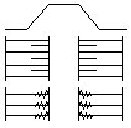
- 흙쌓기면
- 흙깎기면
- 수준면
- 지반면
(정답률: 84%)
37. 내부의 보이지 않는 부분을 나타낼 때 물체를 절단하여 내부 모양을 나타낸 도면은?
- 단면도
- 전개도
- 투상도
- 입체도
(정답률: 79%)
38. 건설재료의 단면표시 중 모래를 나타낸 것은?
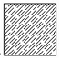
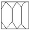
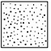
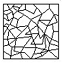
(정답률: 86%)
39. 같은 도면이 여러 장 필요할 때에 사용되는 도면으로 청사진도 또는 백사진도의 원본이 되는 것은?
- 원도
- 트레이스도
- 상세도
- 부품도
(정답률: 50%)
40. 구조물 설계제도에서의 도면 작도 방법에 대한 기본 사항으로 옳지 않은 것은?
- 단면도는 실선으로 주어진 치수대로 정확히 그린다.
- 철근 치수 및 기호를 표시하고 누락되지 않도록 주의한다.
- 단면도에 배근될 철근 수량이 정확하고, 철근 간격이 벗어나지 않도록 주의해야한다.
- 일반적으로 일반도를 먼저 그리고 철근상세도, 배근도를 완성 후 단면도를 그리는 것이 편하다.
(정답률: 69%)
3과목: 토목일반구조
41. CAD 작업에서 사용되는 좌표계와 거리가 먼 것은?
- 절대 좌표계
- 상대 좌표계
- 삼각 좌표계
- 상대 극좌표계
(정답률: 61%)
42. 제도에서 정투상법으로 사용할 수 있는 것은?
- 제1각법과 제2각법
- 제2각법과 제3각법
- 제3각법과 제1각법
- 제4각법과 제1각법
(정답률: 85%)
43. 한국 산업 규격 중에서 토건 기호는?
- KS A
- KS C
- KS D
- KS F
(정답률: 82%)
44. 그림은 콘크리트 옹벽구조물 제도의 도면배치를 나타낸 것이다 ( )에 가장 알맞은 도면은?
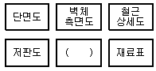
- 구조도
- 일반도
- 정면도
- 평면도
(정답률: 57%)
45. 다음 물체를 제3각법에 의하여 투상하였을 때 우측면도는?
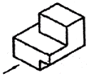
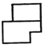
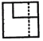
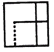
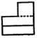
(정답률: 73%)
46. 도면번호, 도면이름, 척도, 도면 작성일 등 도면 관리상 필요한 내용을 기입한 곳은?
- 윤곽선
- 표제란
- 중심마크
- 재단마크
(정답률: 87%)
47. 재료 단면의 경계 표시는 무엇을 나타내는가?
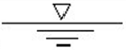
- 암반면
- 지반면
- 일반면
- 수면
(정답률: 85%)
48. 석재의 단면 표시 중 자연석을 나타내는 것은?
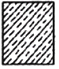
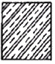
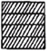
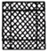
(정답률: 55%)
49. 강구조물에 대한 도면이 종류가 아닌 것은?
- 일반도
- 구조도
- 상세도
- 흐름도
(정답률: 85%)
50. 철근의 치수 및 배치에 대한 설명 중 옳지 않은 것은?
- Ø12는 지름 12㎜인 원형철근을 의미한다.
- D12는 반지름 12㎜인 이형철근을 의미한다.
- 5×100=500 이란 전체길이 500㎜를 100㎜로 5등분한 것이다.
- 12@300=3600 이란 전체길이 3600㎜를 300㎜로 12등분한 것이다.
(정답률: 53%)
51. 구조물 설계제도에 대한 설명으로 옳지 않은 것은?
- 도면에 오류가 없어야 한다.
- 도면은 상세하게, 중복하여 반복 작성한다.
- 도면에는 불필요한 사항은 기입하지 않는다.
- 도면은 설계자의 의도가 정확하게 전달될 수 있어야 한다.
(정답률: 84%)
52. 그림과 같이 길이가 L인 I형강의 치수 표시로 가장 적합한 것은?
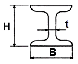
- I H-B×L×t
- I L-B×H×t
- I H×B×t-L
- I B-L×H×t
(정답률: 57%)
53. 보이지 않는 물체의 윤곽을 나타낼 때 가장 알맞은 것은?
- 실선
- 파선
- 1점 쇄선
- 2점 쇄선
(정답률: 73%)
54. CAD 시스템에 대한 설명으로 옳지 않은 것은?
- 도면이 분석, 수정, 삽입이 정확하고 빠르다.
- 작성한 도면의 데이터베이스 구축이 불가능하다.
- 2D, 3D의 설계 도면과 움직이는 도면까지 그릴 수 있다.
- 도면을 여러 사람이 동시에 작업하여 표준화할 수 있다.
(정답률: 81%)
55. CAD 시스템을 운용하기 위해 반드시 필요한 것이 아닌 것은?
- RAM
- CPU
- 운영체제
- 사운드 카드
(정답률: 77%)
56. 도로 설계 제도에서 평면의 곡선부에 기입하지 않는 것은?
- 교각
- 반지름
- 접선장
- 계획고
(정답률: 46%)
57. 중심선을 나타내는 선의 종류로 옳은 것은?
- 굵은 실선
- 굵은 파선
- 1점 쇄선
- 자유 실선
(정답률: 74%)
58. 구조물의 평면도, 입면도, 단면도 등에 의해서 그 형식과 일반구조를 나타내는 도면은?
- 일반도
- 구조선도
- 조립도
- 공정도
(정답률: 68%)
59. 도면에 대한 설명으로 옳지 않은 것은?
- 일반적으로 A4 도면의 윤곽의 나비는 최소 10㎜가 바람직하다.
- 도면은 긴 변 방향을 상하 방향으로 놓는 것을 원칙으로 한다.
- 일반적으로 도면이 크기는 종이 재단 치수(A0~A4)에 따른다.
- 윤곽선은 도면의 크기에 따라 0.5㎜ 이상의 굵은 실선으로 그린다.
(정답률: 53%)
60. 멀고 가까운 거리감을 느낄 수 있도록 하나의 시점과 물체의 각 점을 방사선으로 이어서 그리는 도법으로 구조물의 조감도에 많이 쓰이는 투상법은?
- 투시도법
- 사투상법
- 정투상법
- 축측 투상법
(정답률: 50%)